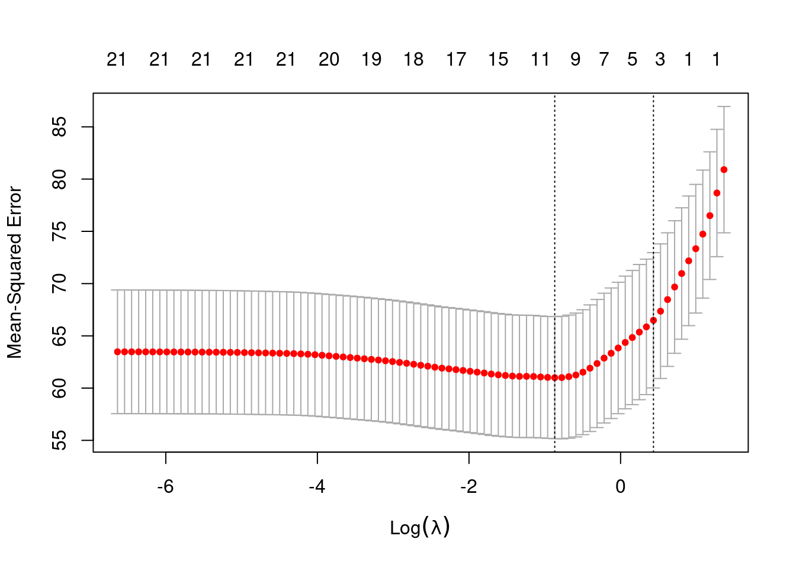
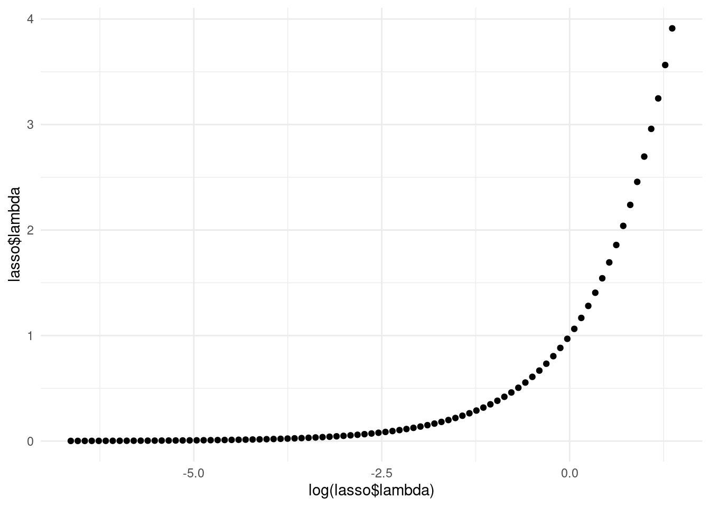

Chapter 4 OLS and lasso
4.1 Load packages
## Loading required package: Matrix## Loaded glmnet 4.0-2## ── Attaching packages ────────── tidyverse 1.3.0 ──## ✓ ggplot2 3.3.2 ✓ purrr 0.3.4
## ✓ tibble 3.0.3 ✓ dplyr 1.0.2
## ✓ tidyr 1.1.2 ✓ stringr 1.4.0
## ✓ readr 1.3.1 ✓ forcats 0.5.0## ── Conflicts ───────────── tidyverse_conflicts() ──
## x tidyr::expand() masks Matrix::expand()
## x dplyr::filter() masks stats::filter()
## x dplyr::lag() masks stats::lag()
## x tidyr::pack() masks Matrix::pack()
## x tidyr::unpack() masks Matrix::unpack()## ── Attaching packages ───────── tidymodels 0.1.1 ──## ✓ broom 0.7.0 ✓ recipes 0.1.13
## ✓ dials 0.0.9 ✓ rsample 0.0.7
## ✓ infer 0.5.3 ✓ tune 0.1.1
## ✓ modeldata 0.0.2 ✓ workflows 0.2.0
## ✓ parsnip 0.1.3 ✓ yardstick 0.0.7## ── Conflicts ──────────── tidymodels_conflicts() ──
## x scales::discard() masks purrr::discard()
## x tidyr::expand() masks Matrix::expand()
## x dplyr::filter() masks stats::filter()
## x recipes::fixed() masks stringr::fixed()
## x dplyr::lag() masks stats::lag()
## x tidyr::pack() masks Matrix::pack()
## x yardstick::spec() masks readr::spec()
## x recipes::step() masks stats::step()
## x tidyr::unpack() masks Matrix::unpack()## here() starts at /home/jae/Machine-Learning-in-R4.2 Load data
Load train_x_reg, train_y_reg, test_x_reg, and test_y_reg variables we defined in 02-preprocessing.Rmd for the OLS and Lasso regression tasks.
4.3 Overview
LASSO = sets Beta coefficients of unrelated (to Y) predictors to zero
RIDGE = sets Beta coefficients of unrelated (to Y) predictors NEAR ZERO but does not remove them
ELASTICNET = a combination of LASSO and RIDGE
Review “Challenge 0” in the Challenges folder for a useful review of how OLS regression works and see the yhat blog for help interpreting its output.
Linear regression is a useful introduction to machine learning, but in your research you might be faced with warning messages after predict() about the rank of your matrix.
The lasso is useful to try and remove some of the non-associated features from the model. Because glmnet expects a matrix of predictors, use as.matrix to convert it from a data frame to a matrix. (You don’t need to worry about this, if you use tidymodels.)
Be sure to read the glmnet vignette
4.4 Fit model
4.4.1 Base R way
4.4.1.1 OLS
Below is an refresher of ordinary least squares linear (OLS) regression that predicts age using the other variables as predictors.
# Fit the regression model; lm() will automatically add a temporary intercept column
fit <- lm(train_y_reg ~ ., data = train_x_reg)
# View the output
summary(fit) ##
## Call:
## lm(formula = train_y_reg ~ ., data = train_x_reg)
##
## Residuals:
## Min 1Q Median 3Q Max
## -17.3861 -4.6850 -0.0145 4.6910 22.9802
##
## Coefficients:
## Estimate Std. Error t value Pr(>|t|)
## (Intercept) 63.26420 11.01839 5.742 3.64e-08 ***
## trestbps 0.12593 0.03450 3.650 0.000338 ***
## chol 0.01881 0.01030 1.826 0.069407 .
## fbs 0.03137 1.54422 0.020 0.983811
## restecg -1.23019 1.01550 -1.211 0.227235
## thalach -0.15812 0.02936 -5.385 2.11e-07 ***
## exang -1.53085 1.37133 -1.116 0.265684
## oldpeak 0.05688 0.60156 0.095 0.924765
## target 2.92493 1.55088 1.886 0.060814 .
## sex_X1 -1.79071 1.35332 -1.323 0.187352
## ca_X1 4.66594 1.41975 3.286 0.001207 **
## ca_X2 7.31997 1.79143 4.086 6.45e-05 ***
## ca_X3 6.09713 2.37498 2.567 0.011017 *
## ca_X4 -5.80107 3.87536 -1.497 0.136067
## cp_X1 -0.87576 1.73145 -0.506 0.613584
## cp_X2 -0.29501 1.53592 -0.192 0.847888
## cp_X3 0.98965 2.14386 0.462 0.644879
## slope_X1 -2.09062 2.30951 -0.905 0.366488
## slope_X2 -1.61388 2.45592 -0.657 0.511883
## thal_X1 -5.40687 8.08527 -0.669 0.504475
## thal_X2 -6.25028 7.89273 -0.792 0.429399
## thal_X3 -5.16377 7.78313 -0.663 0.507838
## ---
## Signif. codes: 0 '***' 0.001 '**' 0.01 '*' 0.05 '.' 0.1 ' ' 1
##
## Residual standard error: 7.436 on 191 degrees of freedom
## Multiple R-squared: 0.3854, Adjusted R-squared: 0.3178
## F-statistic: 5.703 on 21 and 191 DF, p-value: 8.41e-12# Predict outcome for the test data
predicted <- predict(fit, test_x_reg)
# 8. Calculate mean-squared error
(mse_reg = mean((test_y_reg - predicted)^2))## [1] 65.18965## [1] 8.0740114.5 Tidyverse way
This part draws heavily on Alison Hill’s tidy modeling workshop presented at the 2020 RStudio conference.
4.6 Investigate Results
Visualize the distribution of log(lamba) vs mean-squared error.

# Help interpreting this plot: https://stats.stackexchange.com/questions/404795/interpretation-of-cross-validation-plot-for-lasso-regression
# Generate our own version, but plot lambda (not on log scale) vs. RMSE.
qplot(lasso$lambda, sqrt(lasso$cvm)) NOTE: when log(lamba) is equal to 0 that means lambda is equal to 1. In this graph, the far right side is overpenalized, as the model is emphasizing the beta coefficients being small. As log(lambda) becomes increasingly negative, lambda is correspondingly closer to zero and we are approaching the OLS solution.

Show plot of different lambda values:
Show the lambda that results in the minimum estimated mean-squared error (MSE):
## [1] 0.4194076Show higher lambda within one standard error of performance of the minimum
## [1] 1.54274## log_min log_1se
## -0.8689121 0.4335603Look at the coefficients
## 22 x 1 sparse Matrix of class "dgCMatrix"
## 1
## (Intercept) 62.5138689743
## trestbps 0.0516302619
## chol 0.0007491276
## fbs .
## restecg .
## thalach -0.0998695222
## exang .
## oldpeak .
## target .
## sex_X1 .
## ca_X1 .
## ca_X2 0.7585542031
## ca_X3 .
## ca_X4 .
## cp_X1 .
## cp_X2 .
## cp_X3 .
## slope_X1 .
## slope_X2 .
## thal_X1 .
## thal_X2 .
## thal_X3 .Look at the coefficients for lambda.min
## 22 x 1 sparse Matrix of class "dgCMatrix"
## 1
## (Intercept) 55.66199020
## trestbps 0.11015680
## chol 0.01309444
## fbs .
## restecg -0.35221266
## thalach -0.12678780
## exang -0.17134774
## oldpeak .
## target .
## sex_X1 -0.94868280
## ca_X1 2.07593388
## ca_X2 4.41461473
## ca_X3 3.15152379
## ca_X4 -4.41342359
## cp_X1 .
## cp_X2 .
## cp_X3 .
## slope_X1 .
## slope_X2 .
## thal_X1 .
## thal_X2 .
## thal_X3 .## 1 1
## (Intercept) 62.5138689743 55.66199020
## trestbps 0.0516302619 0.11015680
## chol 0.0007491276 0.01309444
## fbs 0.0000000000 0.00000000
## restecg 0.0000000000 -0.35221266
## thalach -0.0998695222 -0.12678780
## exang 0.0000000000 -0.17134774
## oldpeak 0.0000000000 0.00000000
## target 0.0000000000 0.00000000
## sex_X1 0.0000000000 -0.94868280
## ca_X1 0.0000000000 2.07593388
## ca_X2 0.7585542031 4.41461473
## ca_X3 0.0000000000 3.15152379
## ca_X4 0.0000000000 -4.41342359
## cp_X1 0.0000000000 0.00000000
## cp_X2 0.0000000000 0.00000000
## cp_X3 0.0000000000 0.00000000
## slope_X1 0.0000000000 0.00000000
## slope_X2 0.0000000000 0.00000000
## thal_X1 0.0000000000 0.00000000
## thal_X2 0.0000000000 0.00000000
## thal_X3 0.0000000000 0.00000000Predict on the test set
predictions <- predict(lasso, newx = as.matrix(test_x_reg),
s = lasso$lambda.1se)
# How far off were we, based on absolute error?
rounded_errors <- round(abs(test_y_reg - predictions))
table(rounded_errors)## rounded_errors
## 0 1 2 3 4 5 6 7 8 9 10 11 12 13 14 15 16 17 18 21
## 2 9 8 5 6 8 6 8 9 2 7 5 3 1 2 2 3 2 1 1# Group the absolute error into 4 bins.
grouped_errors <- round(abs(test_y_reg - predictions) / 5)
grouped_errors[grouped_errors > 2] = 3
table(grouped_errors)## grouped_errors
## 0 1 2 3
## 19 33 26 12# 4 categories of accuracy
how_close <- factor(grouped_errors, labels = c("very close", "close", "meh", "far"))
table(rounded_errors, how_close)## how_close
## rounded_errors very close close meh far
## 0 2 0 0 0
## 1 9 0 0 0
## 2 8 0 0 0
## 3 0 5 0 0
## 4 0 6 0 0
## 5 0 8 0 0
## 6 0 6 0 0
## 7 0 8 0 0
## 8 0 0 9 0
## 9 0 0 2 0
## 10 0 0 7 0
## 11 0 0 5 0
## 12 0 0 3 0
## 13 0 0 0 1
## 14 0 0 0 2
## 15 0 0 0 2
## 16 0 0 0 3
## 17 0 0 0 2
## 18 0 0 0 1
## 21 0 0 0 1# Scatter plot of actual vs. predicted
qplot(test_y_reg, predictions,
color = how_close) +
geom_point(size = 5, alpha = 0.7) +
theme_minimal()
Calculate MSE and RMSE:
## [1] 72.28227## [1] 8.5018984.7 Challenge 1
Open Challenge 1 in the “Challenges” folder.